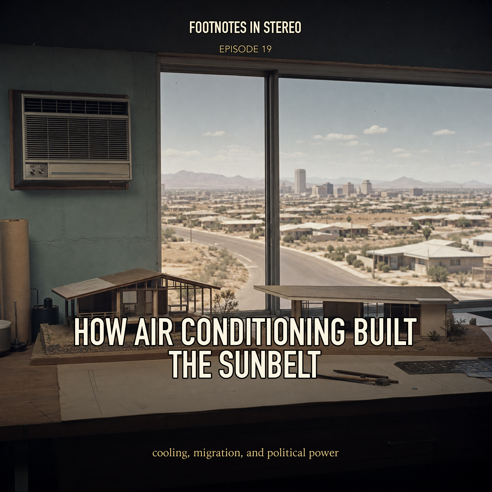

Episode 19 · Patreon bonus
How Air Conditioning Built the Sunbelt
Air conditioning began as a humidity solution for industrial printing, then transformed theaters, offices, homes, architecture, migration, energy use, and electoral power. This episode follows mechanical cooling from Willis Carrier's early systems to the mass-produced window unit and the postwar growth of the Sun Belt, while keeping the environmental bill in view. Created with Gemini Notebook. The conversation and voices in this episode were generated with Gemini Notebook. Fake voices, real facts.
Sources
Transcript
Machine transcript; lightly formatted and subject to correction.
Usually when we look back at the history of a major technological leap, there's a certain clean logic to it. Right. Like a straight line from problem to solution. Exactly. We see a recognized problem. Someone has a brilliant idea and boom, a solution. But then you step into the world of historical medicine and, well, environmental control. And that clean logic just completely falls apart. Oh, it really does. It gets incredibly murky. And in the case of our story today, just overwhelmingly, suffocatingly, sweltering. I want you to picture Washington, D.C. for a second. It's the summer of 1881. Which is practically a swamp. Literally built on a swamp. Yeah. It's July. And if you've ever spent time in the American capital in the dead of summer, you know exactly what kind of oppressive 90 degree heat we're talking about. It's that heavier. Yeah. Where every single breath feels like you're inhaling a warm, wet, wool blanket. And remember, the architecture of the time made it so much worse. You had these heavy stone buildings, minimal ventilation, just these tight corridors. It trapped the heat and just amplified it. Right. People with money just fled the city entirely during those months. Absolutely. But inside the White House, fleeing just wasn't an option. The situation was grim. President James A. Garfield is lying in his bedroom and he's dying. He'd been shot by an assassin, right? Yes. Struck by an assassin's bullet. And the wound is just deeply infected. He's suffering from fever, sepsis, and this innervating crushing heat of the capital is pushing him closer to death. The doctors had to be frantic. Frantic and completely out of ideas. The conventional medical wisdom is failing them. So they actually look outside the medical establishment entirely. They call in a team of naval engineers. Wow. Yeah. They literally ask naval engineers to figure out a way to artificially cool the president's syndrome. Which is, I mean, in the late 19th century, that is a monumental request. They're basically asking them to invent a localized climate on demand. Yeah. Because back then, cooling down meant what? Finding shade. Finding shade, hoping for a breeze, or, you know, relying on these massive blocks of naturally harvested ice shipped down from frozen lakes. Right. Right. The idea of manufacturing cold air mechanically and keeping it in a single room was basically science fiction. Completely. But they try anyway. They do. And the machine they build is just, it's wild. Let me paint a picture for you. Because it is brute force engineering at its finest. They build this massive coffin-sized cast iron box. Sounds ominous. Very. And inside this box, they suspend dozens of screens made of terry cloth cotton. Then on top of the box, they construct a huge reservoir and fill it with over half a ton of shaved ice, rock salt, and water. So basically a giant ice cream maker. Exactly. So this ice melts, turning into this freezing, briny slush that trickles down and completely soaks those terry cloth screens. Okay. I see where this is going. Then they set up a powerful fan at one end to suck in the hot, stagnant room air, blow it aggressively across these freezing wet screens, and pump it through a duct right into Garfield's bedroom. It's fascinating, but it really exposes this fundamental misunderstanding of thermodynamics that plagued those early engineers. How so? Well, they were relying entirely on phase change. You know, specifically the latent heat of fusion. When ice melts, it absorbs heat from the environment. That's why ice cools your drink. Right. But as a method for cooling an entire room, it is incredibly inefficient. It takes a staggering amount of thermal energy to convert solid ice to liquid water, and once it's liquid, the cooling effect just drops off a cliff. And their initial attempts actually made the room feel worse. By blowing air over wet screens, they basically built a giant humidifier. So they took swampy DC air and just packed it with more moisture. Exactly. They did eventually tweak it to control some of that moisture, and they managed to drop the temperature in his room by about 20 degrees. But, and this detail from our sources just blew my mind, to maintain that 20 degree drop, this setup consumed over half a million pounds of ice. Over 58 days, right? Yeah, half a million pounds. That is over four tons of ice every single day. Four tons to just marginally cool one room. Just the logistics of getting that much ice every day in 1881 is staggering. It's an unbelievable expenditure of resources. And tragically, it wasn't enough. Garfield's doctors eventually moved him to the New Jersey Shore just to catch a natural sea breeze. But he passed away shortly after. But those engineers, they knew they were onto something. They really did. In their final report, they wrote that despite the tragic outcome, they saw a future in this. They predicted that hospitals and government buildings could eventually be protected from the, quote, evil results of bad hot air. They recognized the value of controlling the indoor environment, but they just lacked the fundamental science to make it viable. They were treating the symptom, the heat, without understanding the actual disease, which was the humidity. Which brings us perfectly to the mission of our deep dive today. We're exploring how humanity evolved from melting four tons of ice a day for one room to a reality where 87% of American homes have air conditioning. It's a massive leap. It is. And to map this out, we've pulled together an amazing stack of sources. We've got historical engineering reports, architectural histories from critics like Rainer Banum, modern data from the Department of Energy, and this completely paradigm shifting Harvard study that rewrites the history of the American Sun Belt. Because this isn't just a story about comfort. No, not at all. It's the story of a technology that dictated where we live, how we build our cities, how we interact with our neighbors, and the massive environmental debt we're racking up today. We are unpacking the air-conditioned century. And the real through line here is mastery over nature. For most of human history, where you lived and how you built was completely subordinate to local weather. You had to obey the sky. Exactly. You chose your geography based on what the atmosphere allowed. This invention severed that relationship. It drew a hard mechanical line between indoors and outdoors. But to sever that relationship, someone had to crack the code of humidity first. As the Garfield experiment showed, cold air is miserable if it's still damp. Nobody wants to sit in a cold, clammy fog. Right. And the early pioneers were actually focused on disease, not comfort. Yeah. The mid-19th century medical community was obsessed with the monasmithary. Right. The idea of bad air. Exactly. They didn't fully understand mosquitoes or microbes yet. They just noticed that diseases like malaria and yellow fever thrived in hot, swampy environment. So their logic was eliminate the swampy air, eliminate the disease, which led to Dr. John Gorey in the 1840s. He was a physician in Florida treating tropical fevers, and he became obsessed with cooling cities. Gorey's first approach was basically the Garfield method. Brute force. He had ships bring natural ice all the way from New England down to Florida. Which is a long trip for ice. Very long. And he would hang basins of ice from the ceilings of his patients' rooms. Because cold air is denser, it would sink down over the patient and provide some localized relief. But relying on ice shipped halfway down the eastern seaboard is, well, it's a fragile supply chain. Trade disputes interrupted his deliveries, and Gorey realized he had to manufacture the cold himself. And he actually pulled it off. He did. By 1851, he patents a machine that makes artificial ice. He used a compressor to compress air, cool it, and then let it expand rapidly. Which absorbs heat and freezes water. It was a brilliant leak, the absolute foundation of modern refrigeration. But it was a commercial failure, right? Total failure. He couldn't get funding. His main backer died. And the Northern ice lobby, which was a huge economic powerhouse, actively smeared his machine as unnatural and ungodly. Ungodly ice. Yeah. But more importantly for us, his machine only made ice. It didn't regulate the moisture in the air. To solve that, we jump forward to 1902. And the breakthrough doesn't come from a doctor. It comes from an engineer trying to keep paper flat in a printing press. Will is carrier. Will is carrier. Yeah. 25 years old, fresh out of Cornell, working for the Buffalo Forge Company in New York. And Buffalo Forge mostly made heaters and exhaust systems. They moved air, but they didn't really condition it yet. Right. And Carrier gets handed this incredibly frustrating problem from a client in Brooklyn. The Sackett-Ville Helms lithographing and publishing company. They printed a humor magazine called Judge. Yes. A full color magazine. And early 20th century color printing requires multiple passes through the press. You print yellow, then cyan, then magenta. And the alignment, the registration, has to be perfect. Down to a fraction of a millimeter. And that is where the Brooklyn weather was destroying them. Because paper acts like a sponge. Right. Exactly. Paper is hygroscopic. It absorbs moisture from humid air and expands. Or it releases it into dry air and shrinks. So you print the yellow layer on a dry Tuesday. The paper is tight. But on Wednesday, a storm rolls in, humidity spikes. The paper swells up. It physically changes size. And when the cyanide hits the page, it doesn't line up. The whole print run is ruined. They were losing a fortune. Carrier had to make the indoor humidity hold perfectly still, no matter the weather outside. And this is where we have to look at the physics carrier was dealing with. Scientists understood temperature and absolute humidity. The total water vapor in the air. But they didn't have a mathematical mastery of relative humidity and dew point. So let's break that down. Because this is the key to the whole century of AC. What was the hurdle? The hurdle is understanding that warm air holds way more water vapor than cold air. Think of the air like a sponge, like you said. Heat the sponge up. It expands. Holds lots of water. Cool it down. It shrinks. If you take a warm, fully saturated sponge and cool it, you shrink it. And it forces the water out. It drips. This is exactly why you get condensation on a cold glass of water on a summer day. The warm summer air hits the cold glass. Cools down rapidly. Its capacity to hold water shrinks. And it essentially dumps the excess water onto the glass. It hits its dew point. Precisely. We had observed this from millennia. But nobody knew how to harness it and scale it up for a massive printing plant. You can't just put giant cold glasses of water everywhere. Right. You need a predictable system. And the epiphany comes to carrier in the fall of 1902. He's standing on a foggy train platform in Pittsburgh. He's searing at the fog. And he realizes if he wants to dry the air inside the plant, he shouldn't try to extract the water directly. He should dry the air by actively saturating it with water. Which sounds completely paradoxical. Drying with water. But the logic is flawless. He creates an artificial fog. A fine mist of water sprayed inside a sealed chamber. By chilling that mist, he dictates the exact temperature of the air passing through it. Because the cold mist acts like thousands of microscopic cold glasses of water. Exactly. The warm, humid factory air blows through this cold mist. Cools down rapidly, hits its dew point, and dumps its excess water onto the droplets of the mist itself. It rains out into a pan at the bottom. And the air that comes out is saturated, yes. But because it's so cold, its absolute moisture content is incredibly low. You wrung the sponge out. And this gave carrier total control. He kept the humidity at Saccadville homes, locked at exactly 55% all summer. And the cooling effect of his system was equivalent to melting 108,000 pounds of ice every single day. Over 50 tons of ice capacity. Ten times what those naval engineers managed for Garfield. And with absolute precision. It was a triumph. And carrier went on to codify the physics. In 1911, he presented rational, psychrometric formula, which is basically the magna carda of air conditioning. He translated invisible heat and moisture into rigorous math. He even invented a specialized slide rule for it. So by 1915, carrier and some partners formed the Carrier Engineering Corporation. The science is unlocked. But this is where the history takes a deeply revealing turn about the American economy. You'd think they immediately put this in hospitals and homes, right? You would think so. But no, the first wave of AC had absolutely nothing to do with human comfort. It was dedicated exclusively to the comfort of things. Things. It was all about industrial process. Factory owners weren't going to spend money on machines that didn't immediately save product or anything. They saved product or increase output. There's that famous quote from the chemist Ogden D'Oremus. Oh, yes. He said, if they can cool deadhogs in Chicago, why not live bulls and bears on the New York Stock Exchange? Cooling deadhogs. That was the baseline. Hogs got priority over stock brokers and definitely over factory workers. Industry saw the value immediately. Every sector with hygroscopic materials needed carrier. The timeline is a roster of American manufacturing. 1906, a paper mill. 1907, the pharmaceutical plant in Detroit. Because the gelatin pill capsules would get sticky and jam the machines in high humidity. Right. 1908, a celluloid film plan because humidity caused static electricity that ruined the film. 1910, a candy plant in Milwaukee because hot human air made the cocoa butter in chocolate bloom and turned pale. And we have to talk about textiles because that's where the actual term originates. Willis Carrier didn't coin air conditioning. Stuart Kramer, a North Carolina textile engineer, coined it in 1906. And the conditions in those textile mills were brutal. If the air gets too dry, the cotton yarn snaps, the looms stop. Productivity dies. So to keep the air moist, they use the most primitive method imaginable. They use massive teapots to boil water and pump raw steam directly onto the factory floor. Just imagine being a mill worker in North Carolina in August. It's 95 degrees outside and the bosses are pumping raw, boiling steam into your unventilated workspace. It's borderline torturous. It was. Kramer patented a system that used a fine water mist instead of boiling steam. And he called it air conditioning, comparing it to the conditioning of the yarn itself. And it accidentally made the factory slightly more survivable for humans. But it was purely accidental. The ultimate example of this is from 1913 in Richmond, Virginia. Carrier is hired to cool an American tobacco company's stemming room. Because tobacco is highly sensitive to moisture. Right. Carrier visits the facility beforehand and his description is horrifying. He wrote that the air was so thick with tobacco dust, you couldn't see a few feet in front of you. You couldn't tell the race of the person standing next to you. Workers breathe this for 12 hours a day. And then Carrier turns the system on. He turns it on. It pulls the air in, cools it, humidifies it for the tobacco. And crucially, as the air passes through the water sprays, the water scrubs it clean. It acts as an immense filter. The dust just washes away. Overnight, this toxic hellhole becomes the most comfortable, breathable spot in the entire factory. And the workers noticed instantly. People from totally different departments started migrating to the stemming room during their breaks just to eat lunch and breathe clean air. But the management did not care. Even seeing the undeniable health benefits, corporations in the 1910s and 20s viewed worker comfort as a radical luxury. If the product didn't need it, the workers weren't getting it. Right. It wasn't until 1948 that a North Carolina textile union actually made AC a bargaining issue. For half a century, we prioritized the comfort of chocolate in yarn over human beings. It's a stark reminder that technological progress isn't automatically social progress. The AC industry needed a march at where human pleasure actually correlated with revenue. Which brings us to a massive cultural pivot. Entertainment, Hollywood. But to move from an industrial tobacco room to a public theater, the technology had to evolve. Carriers early machines were huge and they were dangerous. Very dangerous. They used standard reciprocating compressors like car pistons, which required high pressure. And they used toxic flammable refrigerants like ammonia. If an ammonia line bursts in a meatpacking plant, it's bad. If it bursts in a crowded theater with a thousand people locked inside, it's a mass casualty event. City inspectors would never allow it. So in 1922, Carrier unveils his masterpiece, the centrifugal chiller. Instead of pistons, he used centrifugal force. Imagine spinning a bucket of water on a rope. The force pushes the water violently outward. He designed a compressor with high-speed spinning blades that hurled the refrigerant gas outward to compress it. And that lower pressure made it safer? Yes, lower pressure means fewer catastrophic leaks. And it allowed him to use a completely different, safer chemical dylene. It was non-toxic and small doses and way less flammable. And the movie theaters were desperate for this. In the early 1920s, going to the movies in the summer was an endurance test. Theaters would literally close in July and August. They'd tried cooling systems before, but they were awful. They'd blow fans over blocks of ice and punk the cold air up through floor vents. Which is the worst possible way to cool a room. Heat naturally rises, so if you pump freezing air out of the floor, people's feet are freezing, while their heads are trapped in a cloud of sweltering heat. People would actually wrap their feet in newspapers to stay warm, while wiping sweat off their foreheads. It was miserable. But then we get to Memorial Day weekend, 1925. The Rivelle Theater in Times Square. They rip out the floor vents, hire Carrier to install his centrifugal chiller. But right before the grand opening, the city safety inspector shows up and threatens to block it. Because dylene hadn't been formally approved for public buildings yet. Exactly. And Carrier's reaction is legendary. He marches into the inspector's office, pours a small amount of liquid dylene into an open container, places it on the desk, and strikes a match. He literally just drops a match into it. But sheer confidence. If he's wrong about the flashpoint, he blows up the office. But the dylene just burns with this slow, lazy flame. No explosion. The terrified inspector sees it's not a volatile explosive and signs the permit on the spot. That is just cowboy engineering right there. It really does. So the Rivelle opens, the theater is packed, people standing seven deep. Adolf Zukor, the founder of Paramount, is in the audience. Carrier's sweating in the wings, hoping the machine can handle a thousand warm bodies. And he had completely redesigned the ductwork, right? Dropping the air from the ceiling instead of the floor? Yes, to mimic natural convection. And Carrier wrote about washing the crowd. Initially, everyone is furiously fluttering these hand-held paper fans. It looked like a field of nervous butterflies. But as the chilled air cascades down, the fans start to slow down. One by one, they drop into people's laps. You stop them cold. And Zukor walks up to him afterward and just says, yes, the people are going to like it. An incredible understatement. The Rivelle saw a $100,000 box office boost that summer. Carrier air conditioned over 300 theaters in the next five years. He saved the summer blockbuster season. And Hollywood became the ultimate marketing wing for Carrier. They associated cool air with luxury and escapism. Exactly. And once the public got a taste, the people in power decided they couldn't be left sweating. Which brings us back to Washington, D.C. Because until the late 1920s, it was still a swamp. The British Foreign Office actually classified it as a subtropical hardship post, like Colonial India. And the breaking point comes in 1928. During a debate in Congress overfunding A.C. for the Capitol. You have fiscal conservatives like Drep William Holiday saying, he feels perfectly fine. It's a waste of money. And Rep. Frank Murphy fires back, pointing out that several members of Congress had literally dropped dead recently, implying the stifling air was killing them. Holiday actually snaps back that maybe they died from working too hard. But eventually everyone admits there's foul air, they're all miserable, and the vote passes. Carrier installs it in the House in 1928, the Senate in 1929. The White House and Supreme Court followed soon after. The timeline is just profoundly telling. The leaders of the free world didn't get A.C. until after the local movie theater in Times Square got it. But once public spaces were cooled, the technology targeted where white collar America worked. The office building. And this completely altered the discipline of architecture. It changed the skyline forever. Because before A.C. skyscrapers were constrained by the weather. You couldn't build a massive solid square block. Right, the offices in the dead center would never get fresh air or light, they'd be ovens. So architects built U-shaped or H-shaped buildings with operable windows and huge air shafts. And 14 foot ceilings just to let the hot air rise above head level. The first real attempt to break this was the Mylem Building in San Antonio in 1928. The first fully air conditioned skyscraper. But it exposed a massive problem. The ductwork. Early centralized systems pushed huge volumes of low pressure air. That required enormous galvanized steel ducts, several feet wide, running through every floor. And in commercial real estate, space is money. A giant air duct is space you can't rent to a law firm. This is why the Empire State Building, built in 1931, didn't have centralized A.C. The massive metal ducts would have eaten up too much rentable space. This was a physical barrier until 1937, when Carrier introduced the conduit weather master system. Instead of pushing massive volumes of low pressure air, he pushed a smaller volume of highly treated primary air at exceptionally high velocities. And high velocity means smaller pipes. Exactly. Narrow steel pipes, sometimes just inches across. Critics called them copper macaroni. These pipes delivered the air to under window units in each office, which had their own water coils for fine tuning the temperature. It saves so much space. And by solving the duct problem, Carrier freed architects from environmental constraints. If you can mathematically guarantee perfect air to any inch of a building, you don't have to design for nature anymore. You can build a solid block, you can drop ceilings to 9 feet, you can seal the windows permanently. It enabled the international style of architecture, the glass box. The ultimate example is the UN Secretariat Building in New York, finished in 1951. It's a massive sheer wall of green-tented glass. But thermodynamically, it's madness. A sealed glass building in the summer sun is a giant greenhouse. The solar gain is astronomical. Without Carrier's mechanical lungs pumping chilled air, it would be a deadly solar oven in hours. As Rainer Banham noted, Le Corbices' utopian glass skyscraper and Carrier's technology met perfectly in the UN building. But I had to push back on this idea of architectural progress. Didn't this destroy regional architecture? It really did. We traded regional wisdom for mechanical homogenization. Yeah. Look at the south before AC. We traded natural resilience for mechanical dependence. If power fails, these buildings are uninhabitable. And sealing them tight invited huge issues with indoor air quality, like the 1976 Legionnaires' disease outbreak in Philadelphia. We're bacteria in a hotel's cooling tower was pumped into every room. We're trying to get the new building to the ground. We're trying to get the new building to the ground. We're trying to get the new building to the ground. We're trying to get the new building to the ground. We're trying to get the new building to the ground. We're bacteria in a hotel's cooling tower was pumped into every room, killing 34 people. The birth of sick building syndrome. Exactly. We stopped building for the environment and started building in spite of it. So by the 1940s, AC conquered the factory, the theater, the skyscraper. But it spectacularly failed in the American home during the pre-war era. The residential market was Carrier's White Whale. But in the 1930s, the tech was too expensive and bulky. Carrier's 1932 atmospheric cabinet cost $1,500. Half the price of a modest house during the Depression. They lost $1.3 million on it. Even a fully air-conditioned Kelvin home in 1936 completely flopped. Less than a quarter of 1% of wired homes had AC in 1938. But the landscape shifted violently after World War II. In 1948, the industry sold 74,000 room units. By 1953, sales skyrocketed to over 1 million units. Dealers couldn't keep them in stock. What drove that insane boom? Post-war prosperity, product design, and savvy marketing. Companies like GE and Chrysler shrink the components into small, reliable window units. You just bought a box and plugged it in. It became an appliance, like a toaster. And the marketing weaponized 1950s ideology. They pitched AC directly to housewives as an essential tool for domestic bliss. You look at those old TV commercials with Betty Furnace standing in a perfect kitchen, pitching AC as relief from summer housework. The industry even funded pseudoscience. A study claimed families in AC homes slept 10% longer, ate more, and retained more, and babies had less heat rash. They were selling a happier family life. And it worked. By 1956, Levitown was offering central AC as a standard feature. But there was a massive social cost to this domestic freeze. It completely altered the American neighborhood. Before window units, summer evenings were communal. Houses were too hot, so people sat on their front stoops or porches. They talked over the fence. But when everyone bought a window unit, they retreated indoors. They shut the windows, locked the doors, and the vibrant street life disappeared. Houston historian David McComb noted that it completely shuts people off from the outside environment, making them more isolated and even more hostile. It's exactly like what the TV did to the living room. The window unit gave us private comfort, but it killed casual community interaction. We traded the front stoop for the isolated sofa. And that's just the micro level change. The macro level change completely rewrote the economic map of the U.S. We're talking about the massive rise of the Sunbelt. Yes. The common narrative is so simple. AC was invented, it got cheap, so everyone moved to the south for the nice winters because the summers were finally bearable. But the Harvard Tubman Center study by Glazer and Toby Oak completely upends that. It's a brilliant economic analysis. Between 1950 and 2000, the South's share of the U.S. population grew from 24 to 30 percent, and their incomes caught up to the national average. But why? Was it productivity, demand for warm weather, or housing supply? Everyone assumes it's the warm weather, the amenity hypothesis. Right, but basic economics, specifically spatial equilibrium, debunks that. If people move strictly for nice weather, like to coastal California, they accept lower wages and pay higher housing prices. The sunshine tax. Exactly. If the Sunbelt boom was just people chasing weather, southern wages should have fallen, and home prices should have skyrocketed. But the data shows southern incomes generally rose, and housing prices remain persistently low. The data contradicts the narrative. So what were the real drivers? Pre-1970, it was surging productivity. The South transitioned from agriculture to manufacturing, transport costs dropped, and the decline of Jim Crow politics allowed them to attract national industry. So people moved South for jobs. In post-1970. Post-1970, the growth was driven by an explosive increase in housing supply. The South built relentlessly. Permissive zoning, cheap land. In 2005, Atlanta, Dallas, and Houston were taught permit-issuing areas. The study found that a 10-degree increase in July temperature correlated with 20% more housing growth. They were building massively in the hottest places. So if I'm connecting the dots here, AC made the South survivable. You can't have Houston office buildings without it. But it was permissive building permits, cheap dirt, and factory jobs that actually built the Sunbelt. AC just unlocked the door, but the economy walked through it. That is a perfect summary. If it was just weather demand, a house in Houston would cost the same as one in Boston. But in the mid-2000s, Boston was $400,000. Houston was $150,000. The Sunbelt offered affordable housing and rising wages. We moved for cheap houses and just brought the window units with us to survive it. But unlocking that door has come with a staggering environmental bill. We engineered a perfect 72-degree indoor climate by destroying the outdoor one. Let's talk refrigerants. It's a tragic chemical history. Carrier used dylene in 1922. But for millions of home window units, they needed something safer and highly efficient. In 1928, Thomas Midgely at GM synthesized chlorofluorocarbons, or CFCs, Freon. Midgely is such a cursed historical figure. Before Freon, he was the guy who put lead into gasoline. He's responsible for two of the worst environmental pollutants of the century. A stark example of unintended consequences. CFCs seem like a miracle. Safe, non-flammable efficient. But decades later, we learned that when they leaked into the stratosphere, UV radiation broke them apart, releasing chlorine that destroyed the ozone layer. The ozone hole was a global emergency, which led to the 1990 Clean Air Act and the Montreal Protocol. We actually banded together and phased out CFCs, which is a huge victory. On its face, yes. But we replaced them with HFCs hydrofluorocarbons. And what's the catch with the HFCs? They are totally safe for the ozone layer, but they are incredibly potent greenhouse gases. They trap heat at a rate hundreds or thousands of times greater than CO2. We solved the ozone hole, but accelerated global warming. And then there's the sheer electricity these machines devour. The Department of Energy says 48% of all energy consumption in American homes goes strictly to heating and cooling. Almost half our energy pie. And as the sunbelt population explodes, the strain on the grid is immense. The DOE had to set mandatory efficiency standards in 1992 and 2006. The 2006 standards alone are expected to avoid the emission of over 369 million metric tons of CO2. That's like taking 72 million cars off the road for a year. The industry is researching non-vapor compression tech now to escape refrigerants entirely, but we aren't there yet. The irony is profound. There's a story from an American Heritage article where a reporter visits the modern carrier factory in Syracuse in the dead of winter. This is the company that invented AC. And the reporter asks how they keep the assembly workers cool in the summer. And the manager points to a bunch of basic old-fashioned electric fans on the floor. Willis Carrier would roll over in his grave. The economic margins are so tight, they can't even afford the electricity to air condition the factory that makes the air conditioners. It highlights the inescapable energy cost. We're trapped on a climate treadmill. The more we aggressively cool our sealed glass skyscrapers and sprawling sun-belt homes, the more carbon and raw waste heat we pump outside. That makes the planet hotter, which forces us to crank the AC of iron, which pumps out more heat. A devastating positive feedback loop, it really questions the sustainability of our architectural choices. If the grid fails in Phoenix in July, it's not just uncomfortable, it's a mass casualty event. Which brings us to the end of our journey today. We started in 1881 with naval engineers melting four tons of ice a day for President Garfield. We moved to Carrier's Epiphany in the Pittsburgh fog, saving magazine pages in Brooklyn. We saw it conquer the factory floor, then the movie palaces of the 1920s, the halls of Congress, and eventually the urban skyline with the sealed glass skyscraper. We watched it shrink into a plug-in appliance that killed the neighborhood front stoop, while unlocking the economic potential of the sun-belt. But I want to leave you the listener with a final thought to maul over. For a century, America has exported its vision of the perfect 72-degree indoor environment to the rest of the globe. A symbol of modernity. Exactly. But as billions of people and hotter, rapidly developing nations rightfully demand the exact same comfort that built the American Sun Belt, can our planet's grid and atmosphere survive, making the entire world a carrier igloo of tomorrow? Or are we going to end up like those engineers in 1881, burning through unsustainable mountains of resources just to keep the inevitable heat at bay? It's a question we have to answer quickly, because the global temperature is only going up. Thank you for joining us on this deep dive into the source material. Stay curious, and stay cool.